Отель Windsor стоит в Лайгулье, лигурийской деревне на неполные две тысячи жителей. Он открылся в конце XIX века пансионом Luciano; с тех пор здесь сменились три имени, два века и несколько эпох. Сюда приезжали пережидать северные зимы, лечиться морем и светом, писать письма домой. Вид из окна не менялся ни разу.
«Мы приехали вчера; здесь чудесно и солнечно, море синее, и я сижу на балконе прямо над песком и пишу».
— Д. Г. Лоуренс · письмо с лигурийского берега · 16 ноября 1925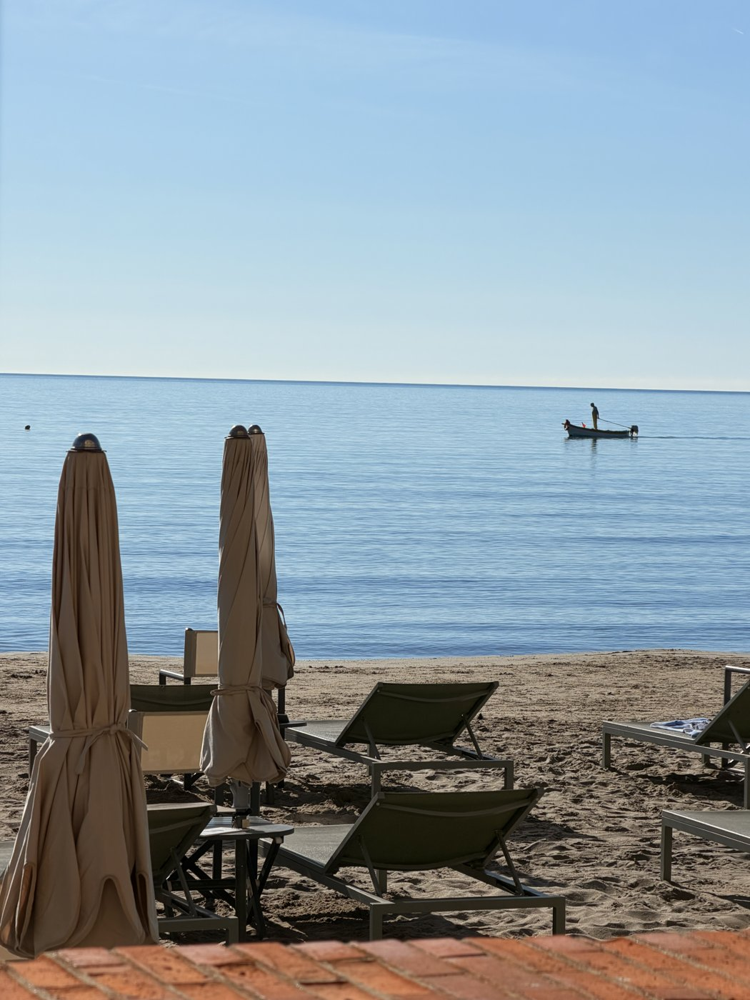
Первым на воду выходит рыбак — каждое утро, в один и тот же час, словно кто-то должен открывать море. В XVII веке отсюда уходили за кораллом до ста лодок; на коралловые деньги деревня построила себе церковь San Matteo с двумя майоликовыми куполами — благодарность морю, сложенная в камне. Промысла давно нет, но мы всё ещё можем увидеть рыбаков в море.
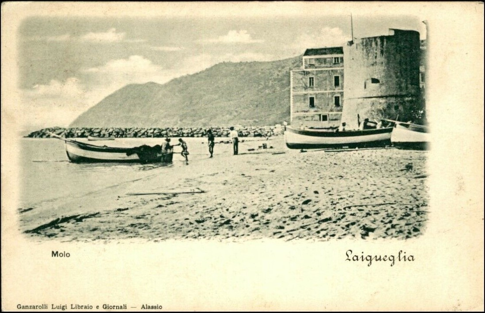
27 сентября 1900 года. Wikimedia Commons, public domain
Англичане открыли этот берег в 1875-м: Алассио, в трёх километрах, стало их «зимней Ривьерой» — с библиотекой, чаем и прогулками по кромке воды. Пансион, из которого вырастет Windsor, открылся как раз для них. Зимой 1903/04-го сюда приехал Эдвард Элгар — и увёз с этого берега целую увертюру, «In the South (Alassio)»: «Я соткал эту музыку в долине Андоры за один долгий чудесный день на открытом воздухе», — вспоминал он. Колонии давно нет. Прогулки её пережили.
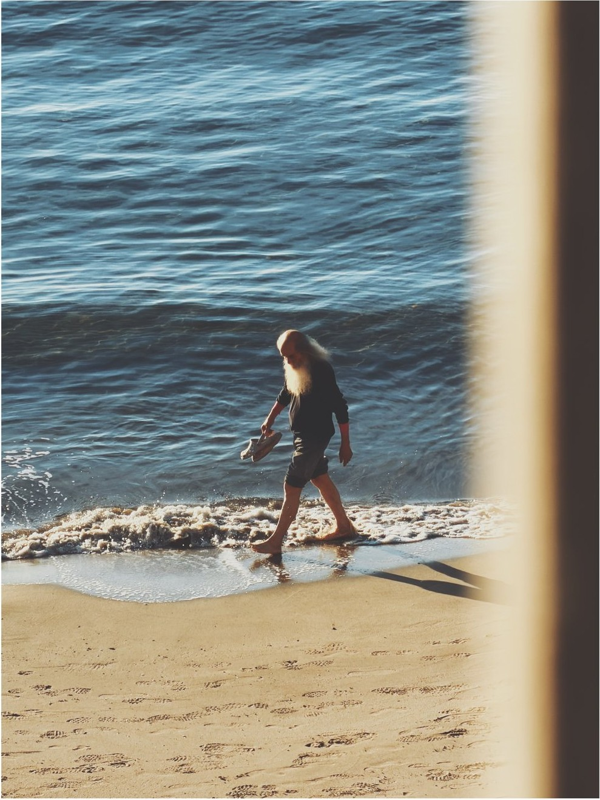
Путеводитель Мюррея 1892 года узнавал Лайгулью по «красивой новой церкви» и гладкому пляжу до самого Алассио. Путеводители стареют быстрее всех книг — но этой строчке сто тридцать лет, а по пляжу до сих пор ходят так же: медленно, у самой воды, никуда не торопясь.
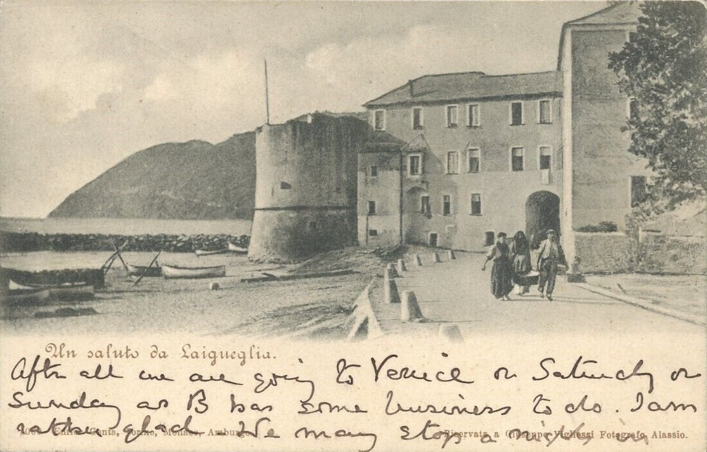
10 августа 1901 года. Фото: Giuseppe Vighessi, Алассио.
Wikimedia Commons, public domain
«Всё-таки мы едем в Венецию в субботу или воскресенье — у Б. там дела. Я, пожалуй, рада. Может быть, остановимся на ночь…»
— рукописная записка на обороте, по-английскиЕдинственное дошедшее до нас письмо из самой Лайгульи — не про архитектуру и не про закаты. Про планы на субботу. Может быть, поэтому ему и веришь: счастье редко замечает себя — у него планы.
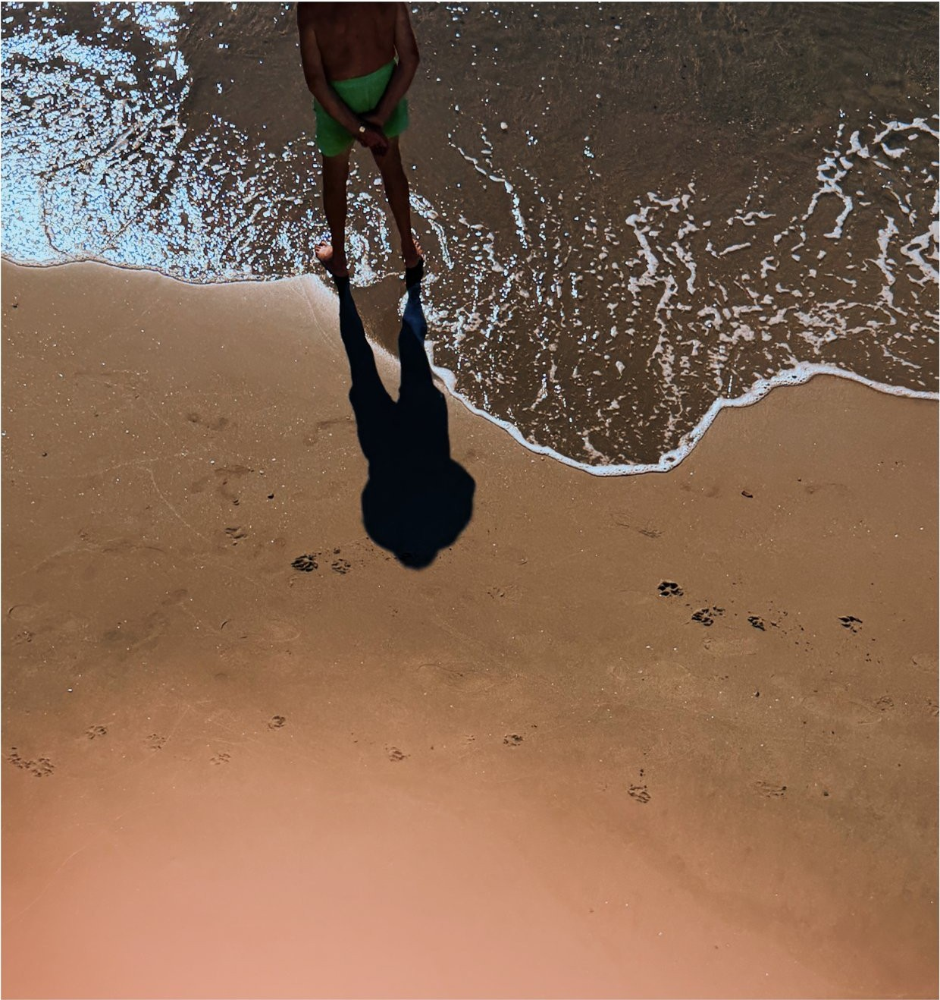
Сто двадцать пять лет спустя мы пишем отсюда то же самое: приехали, море синее, в субботу едем дальше. Только письма стали короче и называются иначе. Море не заметило разницы.
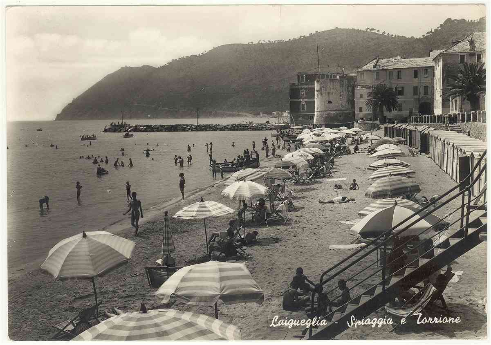
Шестидесятые — золотой век этого пляжа: полосатые зонты, послевоенная Италия, у отеля уже третье имя — Windsor. Почему английское — никто уже точно не помнит. Так в старых семьях носят имя прадеда: история потерялась, имя идёт дальше.
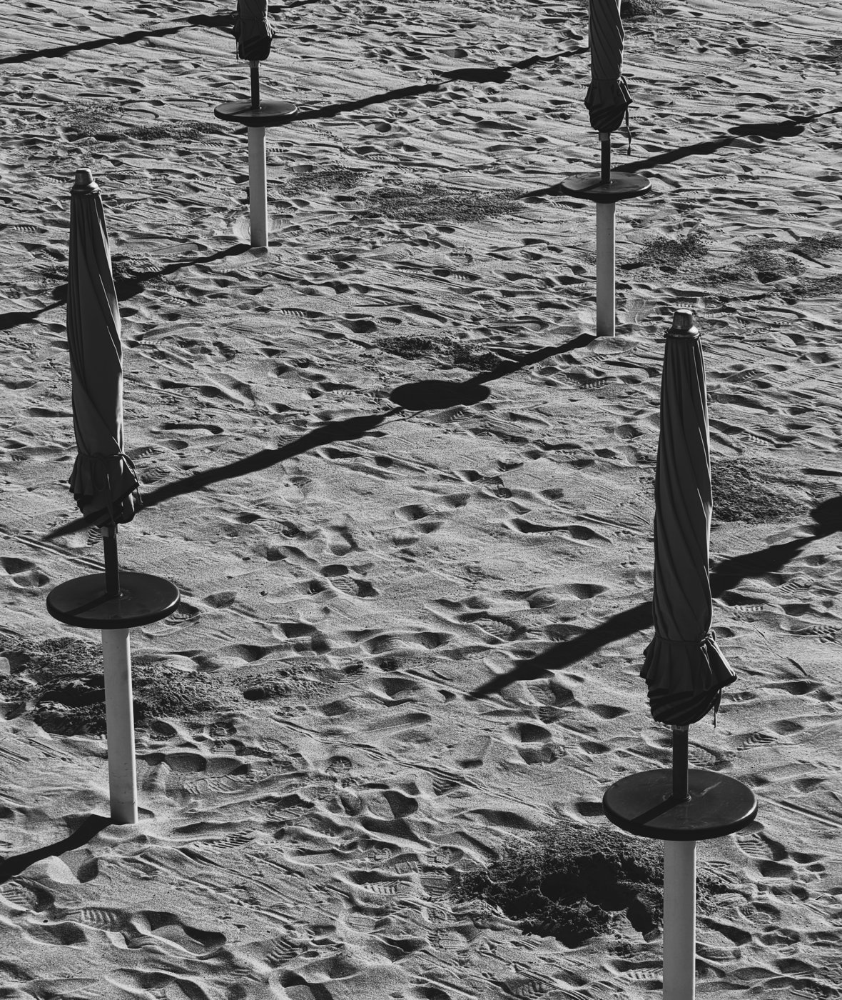
Зонты здесь сворачивают к вечеру — тем же жестом, что и шестьдесят лет назад. Есть движения, которые пляж передаёт из рук в руки, как ремесло.
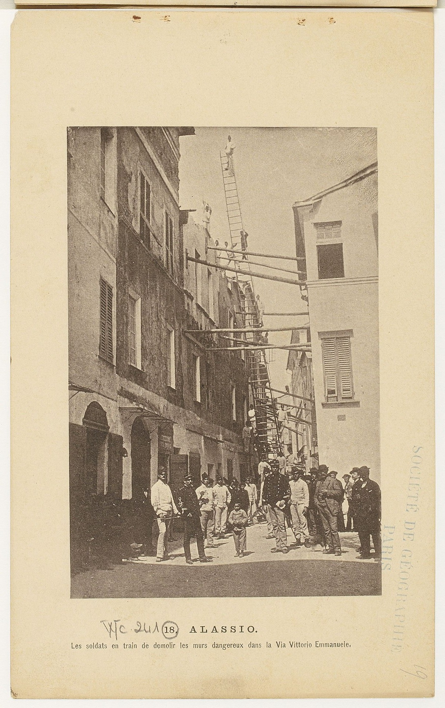
Алассио, альбом F. Baranger, Париж. Gallica / Wikimedia Commons, public domain
Этот берег умеет и по-другому. «Мы пережили совершенно небывалое время… Не тревожьтесь о нас. Мы целы», — писал домой Джордж Макдональд через две недели после толчков. Землетрясение 1887-го опустошило и Колла-Микери, деревню прямо над Лайгульей. Семьдесят лет она простояла почти пустой — пока в 1958-м её не нашёл Тур Хейердал: человек, переплывший океан на плоту, выбрал себе дом на этом гребне, над этим морем. Здания здесь помнят больше, чем рассказывают.
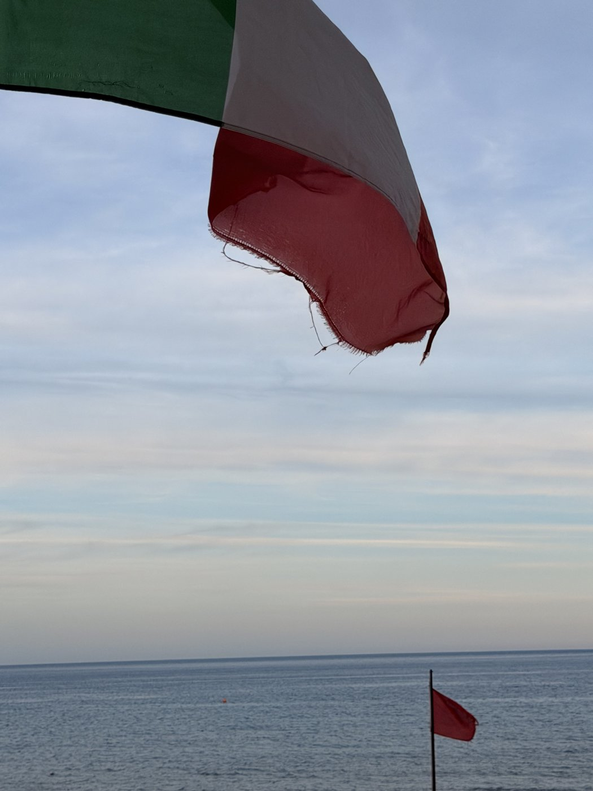
Потом век кончился. Отель закрылся и простоял тёмным почти двадцать лет — с видом на море, которого никто не видел.
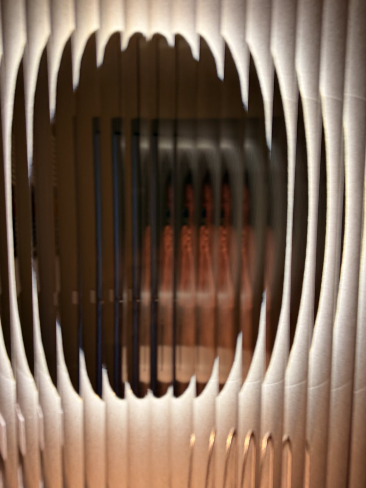
Его разбудили 11 августа 2022 года — со старым именем и интерьерами эпохи Novecento. Дом, который долго спал, просыпается не сразу: сначала свет, потом голоса.
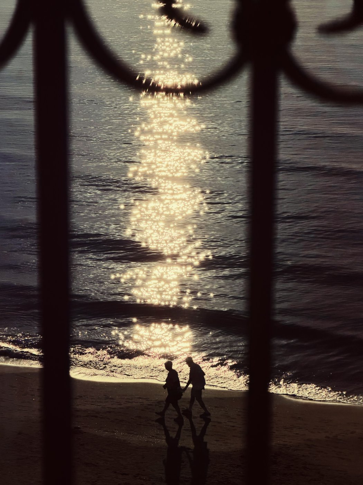
Вечером все снова выходят к воде — как в 1879-м, как в 1901-м, как вчера. У этой прогулки нет автора и нет даты. Её просто передают дальше — вместе с берегом.
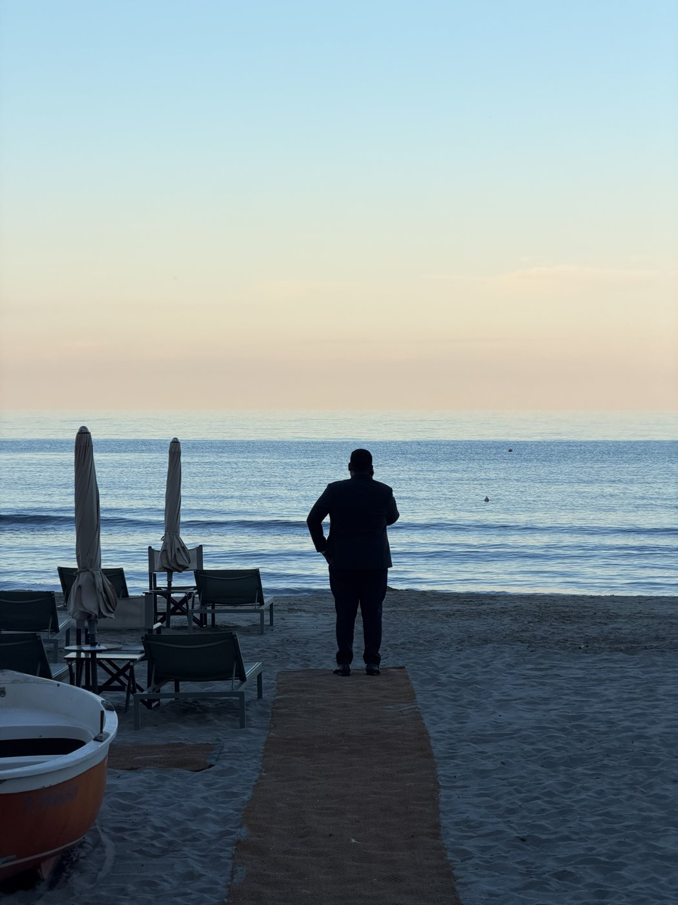
Последним к воде выходит человек из отеля — в костюме, как на службе. Постоит минуту, посмотрит — будто проверит, на месте ли море, — и вернётся к работе.
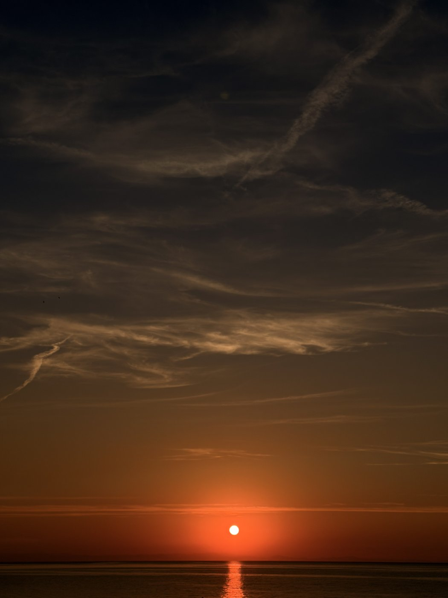
«Этот маленький забытый мир счастья», — написал Ницше о другом конце этого же берега. Письмо, которое вы отправите отсюда, уже написано — сто пятьдесят лет назад, другим почерком. Осталось поставить дату.